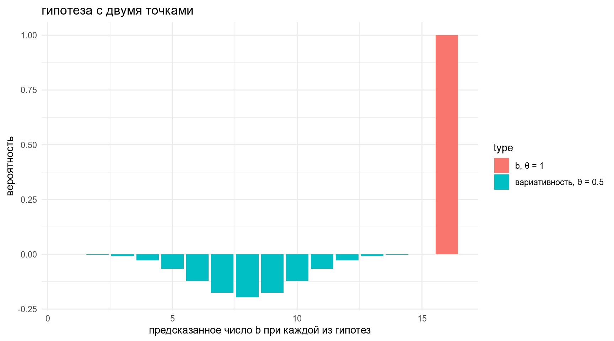

\[P(θ|Data) = \frac{P(Data|θ)\times P(θ)}{P(Data)}\]
\[\frac{P(θ|Data)}{P(θ)} = \frac{P(Data|θ)}{P(Data)}\]
Левая часть этого уравнения описывает вероятности относительно параметров, и эти вероятности представляют собой наши представления. Доля описывает, как наши представления относительно параметра θ обновляются в свете данных.
Байесовский фактор берется из этой же формулы:
\[\frac{\frac{P(M_A|Data)}{P(M_A)}}{\frac{P(M_B|Data)}{P(M_B)}} = \frac{\frac{P(Data|M_A)}{P(Data)}}{\frac{P(Data|M_B)}{P(Data)}} = \frac{P(Data|M_A)}{P(Data|M_B)} = BF_{AB}\]
Т. е. байесовский фактор по сути это всего лишь пропорция составленная из двух функций правдоподобия.
В датасете c грибами (взят c kaggle) представлено следующее распределение по месту обитания:
df <- read_csv("https://github.com/agricolamz/2019_BayesDan_winter/blob/master/datasets/mushrooms.csv?raw=true")
df %>%
count(class, habitat) %>%
group_by(class) %>%
mutate(prop = n/sum(n)) %>%
ggplot(aes(class, prop, fill = habitat, label = round(prop, 3)))+
geom_col()+
geom_text(position = position_stack(vjust = 0.5), color = "white")Мы нашли некоторый новый вид грибов на лужайке (grasses), а потом в лесу (woods). Давайте посчитаем \(BF_{edible\ poisonous}\):
\[L(grasses,\ wood|edible) = 0.335 \times 0.447 = 0.149745\]
\[L(grasses,\ wood|poisonous) = 0.189 \times 0.324 = 0.061236\]
\[BF_{edible\ poisonous} = \frac{L(grasses,\ wood|edible)}{L(grasses,\ wood|poisonous)} = \frac{0.149745}{0.061236} = 2.445375\]
Вашего друга похитили а на почту отправили датасет, в котором записаны данные о погоде из пяти городов. Ваш телефон зазвонил, и друг сказал, что не знает куда его похитили, но за окном легкий дождь (Rain). А в какой-то другой день — сильный дождь (Rain Thunderstorm). Посчитайте \(BH_{San\_Diego\ Auckland}\) с точностью до 1 знака после запятой.
Функция, которая потом понадобиться:
x_axis <- seq(0, 1, 0.001)
dunifbinom <- function(x, N, lo, hi) {
y = x
for (i in 1:length(x)) {
y[i] = integrate(function(theta) dunif(theta, lo, hi) * dbinom(x[i], N, theta),
0, 1, subdivisions = 10000L,
rel.tol = 1e-4,
abs.tol = 1e-4,
stop.on.error = TRUE,
keep.xy = FALSE,
aux = NULL)$value
}
y
}
- Эту идею можно представить как три гипотезы точки:
- b — 1
- r — 0
- вариативность — 0.5
tibble(x = rep(x_axis, 3),
y = c(5*(x_axis == 0),
5*(x_axis == 1),
5*(x_axis == 0.5)),
type = rep(c("r, θ = 0", "b, θ = 1", "вариативность, θ = 0.5"),each = 1001)) %>%
ggplot(aes(x, y, xend = x, yend = 0.1, color = type, linetype = type))+
geom_step(size = 1.2)+
labs(title = "гипотеза с тремя точками",
x = "вероятность",
y = "")data_frame(x = rep(x_axis, 2),
y = c(5*(x_axis == 1),
5*(x_axis == 0.5)),
type = rep(c("b, θ = 1", "вариативность, θ = 0.5"),each = 1001)) %>%
ggplot(aes(x, y, xend = x, yend = 0.1, color = type, linetype = type))+
geom_step(size = 1.2)+
labs(title = "гипотеза с двумя точками",
x = "вероятность",
y = "")Какие предсказания делает наша модель?
data_frame(x = rep(1:16, 2),
y = c(-dbinom(1:16, 16, prob = 0.5),
dbinom(1:16, 16, prob = 1)),
type = rep(c("вариативность, θ = 0.5", "b, θ = 1"),each = 16)) %>%
ggplot(aes(x, y, fill = type))+
geom_col()+
labs(title = "гипотеза с двумя точками",
x = "предсказанное число b при каждой из гипотез",
y = "вероятность")
Наверное, лучше как-то ослабить нашу модель…
data_frame(x = rep(x_axis, 2),
y = c(5*(x_axis == 0.96),
5*(x_axis == 0.5)),
type = rep(c("b, θ = 0.96", "вариативность, θ = 0.5"),each = 1001)) %>%
ggplot(aes(x, y, xend = x, yend = 0.1, color = type, linetype = type))+
geom_step(size = 1.2)+
labs(title = "гипотеза с двумя точками",
x = "вероятность",
y = "")data_frame(x = rep(1:16, 2),
y = c(-dbinom(1:16, 16, prob = 0.5),
dbinom(1:16, 16, prob = 0.96)),
type = rep(c("вариативность, θ = 0.5", "b, θ = 0.96"),each = 16)) %>%
ggplot(aes(x, y, fill = type))+
geom_col()+
labs(title = "гипотеза с двумя точками",
x = "предсказанное количество b/r в соответствии с каждой гипотезой",
y = "вероятность")+
scale_x_continuous(breaks = 1:16)Выглядит хорошо, но чисто теоретически у этой модели есть проблемы…
Если мы увеличим количество наблюдений
n <- 90
data_frame(x = rep(1:n, 2),
y = c(-dbinom(1:n, n, prob = 0.5),
dbinom(1:n, n, prob = 0.96)),
type = rep(c("вариативность, θ = 0.5", "b, θ = 0.96"),each = n)) %>%
ggplot(aes(x, y, fill = type))+
geom_col()+
labs(title = "гипотеза с двумя точками",
x = "предсказанное количество b/r в соответствии с каждой гипотезой",
y = "вероятность")+
scale_x_continuous(breaks = 1:n*5)+
theme(legend.position = "bottom")data_frame(x = rep(x_axis, 2),
y = c(5*(x_axis == 0.5),
dunif(x_axis, 0.5, 1)),
type = rep(c("вариативность, θ = 0.5", "b, θ = u(0.5, 1)"),each = 1001)) %>%
ggplot(aes(x, y, xend = x, yend = 0.1, color = type, linetype = type))+
geom_step(size = 1.2)+
labs(title = "точечная и интервальная гипотеза",
x = "вероятность",
y = "")data_frame(x = rep(1:16, 2),
y = c(-dbinom(1:16, 16, prob = 0.5),
dunifbinom(x = 1:16, 16, 0.5, 1)),
type = rep(c("вариативность, θ = 0.5", "b/r, θ = u(θ|0.5, 1)"),each = 16)) %>%
ggplot(aes(x, y, fill = type))+
geom_col()+
labs(title = "точечная и интервальная гипотеза",
x = "предсказанное количество b/r в соответствии с каждой гипотезой",
y = "вероятность")+
scale_x_continuous(breaks = 1:16)data_frame(x = rep(1:16, 2),
y = c(-dbinom(1:16, 16, prob = 0.5),
dunifbinom(x = 1:16, 16, 0.5, 1)),
type = rep(c("вариативность, θ = 0.5", "b, θ = u(θ|0.5, 1)"),each = 16)) %>%
ggplot(aes(x, y, fill = type))+
geom_col()+
labs(title = "точечная и интервальная гипотеза",
x = "предсказанное количество b/r в соответствии с каждой гипотезой",
y = "вероятность")+
scale_x_continuous(breaks = 1:16)+
annotate(geom = "text", x = 11, y = -0.1, label = "⬆", size = 10)+
annotate(geom = "text", x = 11, y = 0.14, label = "⬇", size = 10)\[\frac{L(11|\theta = u(\theta|0.5, 1))}{L(11|\theta = 0.5))} = \frac{0.10920805}{0.06665039} = 1.638521\]
| BF | Interpretation |
|---|---|
| 0 to 2 | Not worth more than a bare mention |
| 2 to 6 | Positive |
| 6 to 10 | Strong |
| > 10 | Very strong |
data_frame(x = rep(1:16, 2),
y = c(-dbinom(1:16, 16, prob = 0.5),
dbinom(1:16, 16, prob = 0.7)),
type = rep(c("θ = 0.5", "θ = 0.7"),each = 16)) %>%
ggplot(aes(x, y, fill = type))+
geom_col()+
labs(title = "гипотеза с двумя точками",
x = "предсказанное количество в соответствии с каждой гипотезой",
y = "вероятность")+
scale_x_continuous(breaks = 1:16) -> p1
data_frame(x = rep(1:16, 2),
y = c(-dbinom(1:16, 16, prob = 0.5),
dunifbinom(x = 1:16, 16, 0, 1)),
type = rep(c("θ = 0.5", "θ = u(θ|0, 1)"),each = 16)) %>%
ggplot(aes(x, y, fill = type))+
geom_col()+
labs(title = "point and unimodal",
x = "предсказанное количество в соответствии с каждой гипотезой",
y = "вероятность")+
scale_x_continuous(breaks = 1:16) -> p2
data_frame(x = rep(1:16, 2),
y = c(-dunifbinom(x = 1:16, 16, 0, 1),
dunifbinom(x = 1:16, 16, 0.5, 1)),
type = rep(c("θ = u(θ|0, 1)", "θ = u(θ|0.5, 1)"),each = 16)) %>%
ggplot(aes(x, y, fill = type))+
geom_col()+
labs(title = "",
x = "предсказанное количество в соответствии с каждой гипотезой",
y = "вероятность")+
scale_x_continuous(breaks = 1:16) -> p3
data_frame(x = rep(1:16, 2),
y = c(-dunifbinom(x = 1:16, 16, 0, 0.5),
dunifbinom(x = 1:16, 16, 0.5, 1)),
type = rep(c("θ = u(θ|0, 0.5)", "θ = u(θ|0.5, 1)"),each = 16)) %>%
ggplot(aes(x, y, fill = type))+
geom_col()+
labs(title = "complementary directions",
x = "предсказанное количество в соответствии с каждой гипотезой",
y = "вероятность")+
scale_x_continuous(breaks = 1:16) -> p4
gridExtra::grid.arrange(p1, p2, p3, p4)df <- read_csv("https://raw.githubusercontent.com/agricolamz/r_on_line_course_data/master/zilo_class_experiment.csv")
df %>%
count(stimulus, translation_en, class) %>%
filter(class == "b") %>%
mutate(variability_model = dbinom(n, 16, prob = 0.5),
non_variability_model = dunifbinom(x = n, 16, 0, 1),
BF_vm_nvm = variability_model/non_variability_model) %>%
select(stimulus, translation_en, n, BF_vm_nvm) %>%
arrange(desc(BF_vm_nvm)) %>%
DT::datatable()